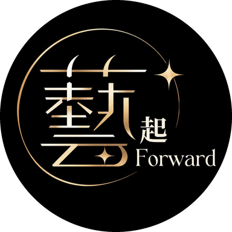
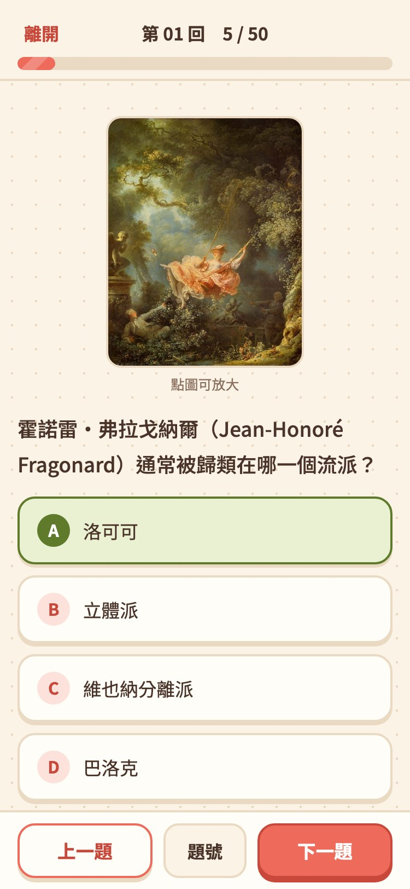
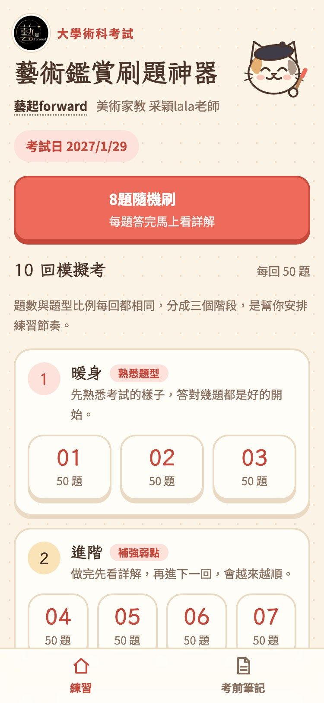
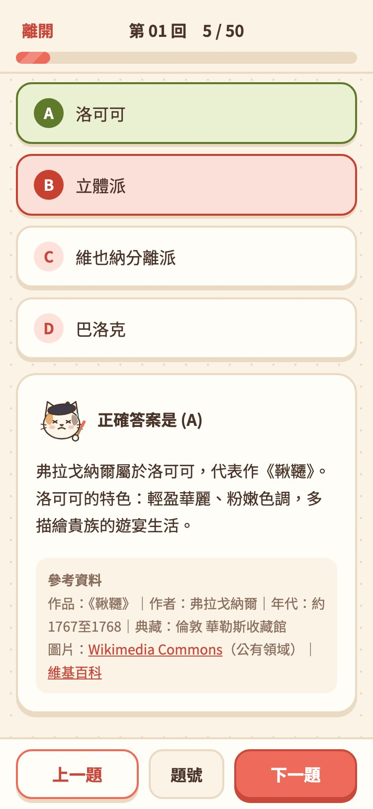
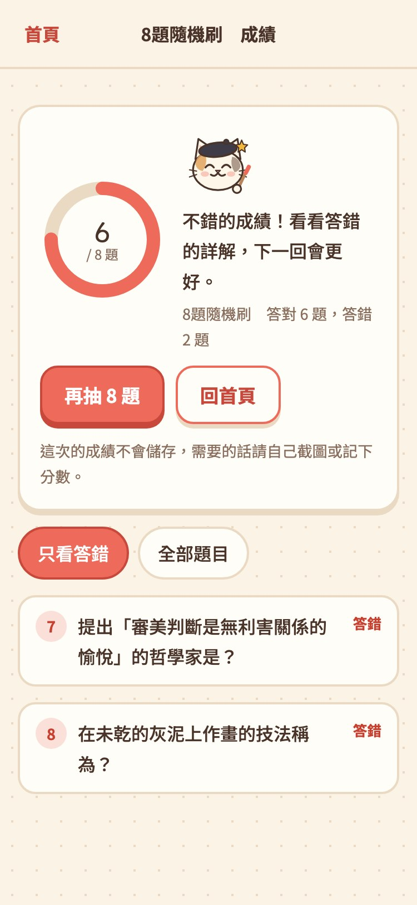

每回 50 題，照考試的樣子練，不限次數。
附作品圖，詳解標明作者、年代、典藏處與圖片來源。
答錯當下就知道為什麼，不用另外查。
西洋、中國、臺灣美術史與當代時事，整理成時間軸與對照表。
通勤、等車的零碎時間，抽 8 題就能練一輪。
瀏覽器打開就好，不用下載 App。
左右滑動，看三個畫面。



題目參考 115 學年大學術科「美術鑑賞」考題分析、教學講義與美術史教材，由老師編輯整理成 10 回模擬考。
出題與整理
不是。這是參考考題分析編輯的練習題，目的是讓你熟悉考試的樣子、找出不熟的地方，不保證會考，也不保證成績。
加入 Skool 社群與使用刷題網站，目前都不用付費。
可以。用手機瀏覽器打開連結就能練，不用下載 App，電腦與平板也可以。
不會。網站不收集也不儲存你的作答紀錄，需要的話請自己截圖或記下分數。
歡迎在社群裡告訴老師，老師會再優化。